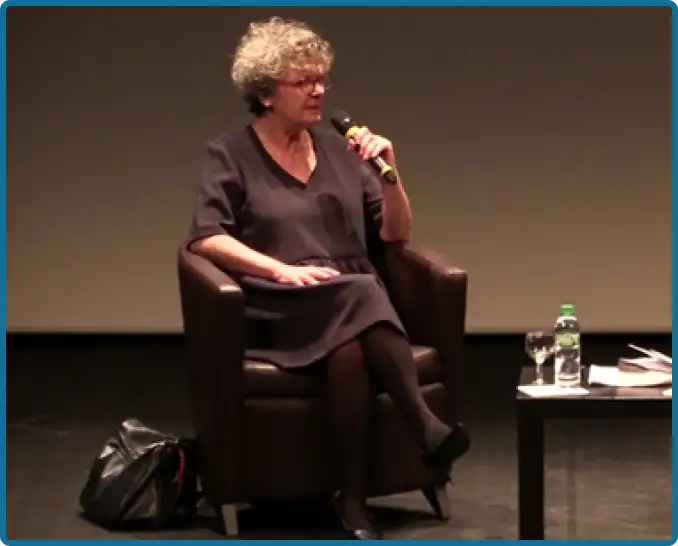
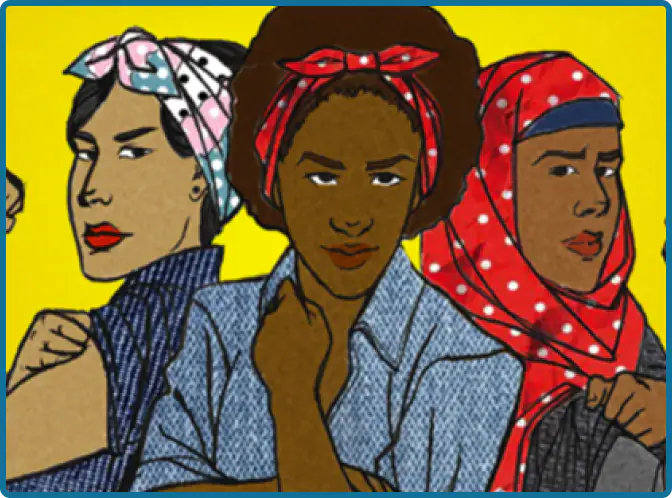

A sufficiently advanced era where man became aware of the obvious equality of the sexes.
A modern era, where the words of Olympe de Gouge still resound in every awake mind:
"Woman is born free and remains equal to man in rights."
An era of progress, resulting from the learning of centuries of past mistakes, where never
again
a woman will be a
victim, only because she was born a girl....
Such would have been my introductory sentences as Dominique Sigaud, author of "La
malédiction
d'être fille" would have
liked to read them but she is the best placed to know to what point, all this is only utopia.

Conference with Dominique Sigaud
as part of the Grandes rencontres 2020
The work of a lifetime
Since the beginning of the 80's Dominique Sigaud has traveled the world in search of
understanding of cultures that are
unknown to her.
A former reporter, she decided to leave her job at the NouvelObs for political
reasons
and to devote her life to the
study of the world, in the field.
Her objective is to help people discover, understand and share the cultures of
countries
(often in conflict situations)
that she does not understand. For her, the best way to understand a country is to go there directly and
investigate.
Deeply feminist and humanist by nature, she decided to use her talents as a
journalist
as well as the culture she had
acquired during her previous travels to write a book about the deplorable situation faced by many girls
in
the world.
When she wrote the first lines of her draft in 2016, she had no idea that the
situation
would be so serious.
An informative purpose
During his travels, Dominique Sigaud was able to collect hundreds of testimonies,
each
one more shocking than the other,
so much so that for a while, his work day could not begin without systematic weeping upon awakening.
His primary objective in writing this story was to open the eyes of the world to an
unfortunate and macabre reality.
A 230 page report, sincere and raw, which wastes no time in teaching us that no,
repeated rapes, sexual mutilation and
forced marriages are still a disastrous reality suffered by hundreds of thousands of girls throughout
the
world, even in
countries considered "developed".
A 3 years long ordeal so that never again, about these thousands of destroyed
lives, we
can say "I didn't know".
A fight in vain ?

Drawing of several feminists
After reading Dominique Sigaud's book, the loss of hope in any feminist cause is
legitimate, but the disastrous
situation suffered by its thousands of silent voices should not make us forget all the paths taken since
the
beginning
of the movement.
From the declaration of the rights of women and citizens by Olympe de Gouges, to
the
modern feminist movement such as
#metoo, the struggle for equality between men and women has continued to evolve and bring progress and
solutions to the
future of the world.
By letting Ada Lovelace study mathematics as an equal with Charles Babbage,
feminism
helped to build the digital world
we live in today, by giving Margaret Hamilton the right to write the computer program for the Apollo
missions, feminism
allowed humanity to set foot on the moon, and by letting Marie Curie the right to carry out her
experiments,
feminism
allowed progress in the fields of science and medicine.
Feminism has always contributed, without us realizing it, to the great advances
that have made the world what it is today.
What would be our advances today in the fields of computer science, art, sports or
engineering... without the genius of
women? The answer is two words: much less.
Dominique Sigaud's book is not intended to give up, but on the contrary to be an
additional justification to the
feminist struggle, as well as a cry of alert to the ears of the world.
Victory is still far away, but it will continue to approach as long as the fight
continues.